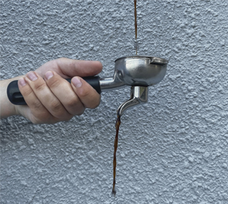
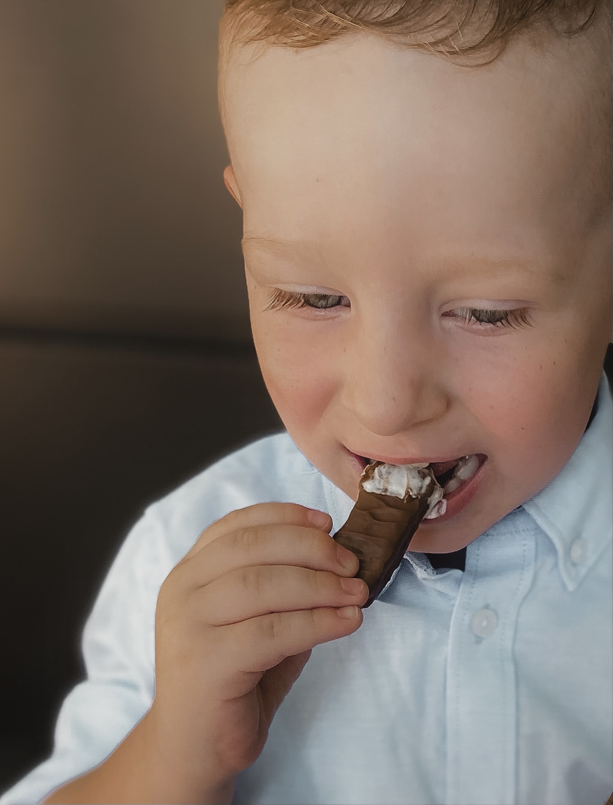
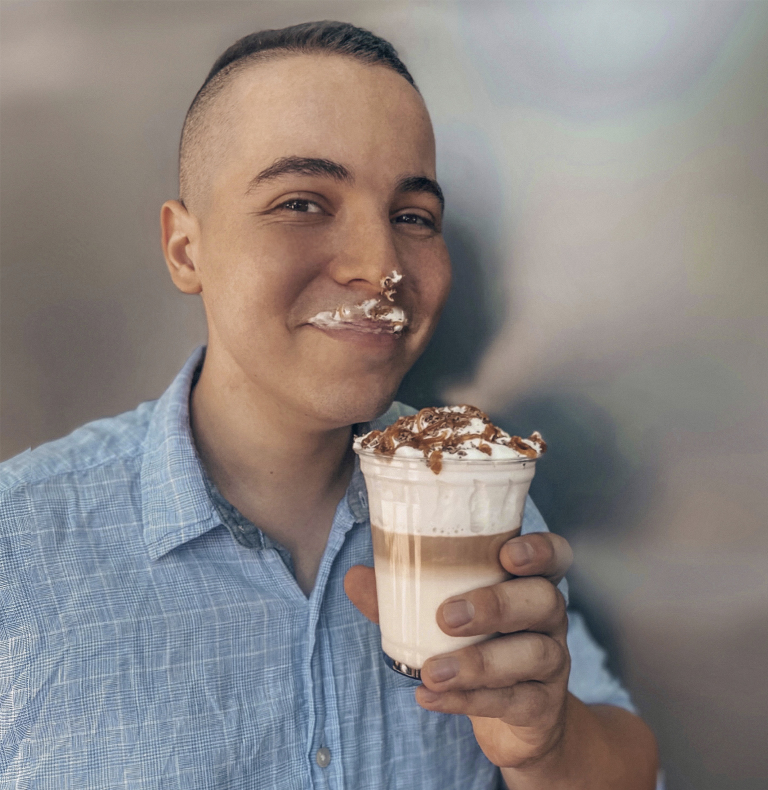

Авторська кава
Авторські напої - це фантазія бариста з різних частинок світу. В нашому асортименті є як і дуже популярні напої в Україні та світі, так і напої вигадані нашим шеф-бариста.
Снікерс
Немає жодної людини в світі, яка ніколи не чула чи не куштувала цей легендарний батончик. А як щодо напою із одноіменною назвою? Є багато варіантів цього напою, ми ж зробили "Снікерс" кавою яку легко смакувати та не залишить осторонь нікого.
Стакан 1 шт.(картон)Подріблений арахісСироп "Солона карамель"ЕспресоМолокоТертий шоколадВихід напою:
360 мл.10 гр.20 мл.1 шт.250 мл.5 гр.360 мл.
420 мл.15 гр.30 мл.1 шт.330 мл.5 гр.420 мл.
Кедровий горішок
А як вам поєднання кедрового горішка, солодкої карамелі та надзвичайно ніжного капучино? Якщо б існувало кавове "Євробачення", за підсумками голосів переміг би саме "кедровий горішок".

Стакан 1 шт.(картон)Кедровий горіхСироп "Карамель"ЕспресоМолокоВихід напою:
360 мл.10 гр.20 мл.1 шт.250 мл.360 мл.
420 мл.15 гр.30 мл.1 шт.330 мл.420 мл.

Твікс кава
Ой, ну тут ціла історія. Як можна не полюбити напій, який поєднує в собі смачний лате з карамеллю, ніжні пухкі вершки, тертий шоколад та справжнісіньке печиво Твікс?
Стакан 1 шт.(пластик)Сироп "Солона карамель"МолокоЕспресоЗбиті вершкиТертий шоколадТопінг "Карамель"Палочка "Твікс"Вихід напою:
300 мл.20 мл.180 мл.1 шт.50 гр.5 гр.10 гр.2 шт.350 мл.
400 мл.30 мл.280 мл.2 шт.50 гр.5 гр.10 гр.2 шт.450 мл.
Баунті
Райська насолода, чи не так? Не так багато людей полюбляє кокос. Але якщо гість до нього небайдужий, "баунті" саме для нього! Шоколадний та кокосовий сироп, лате, смачні вершки та верхівка із косовою стружкою та шоколадом, ммм... кайф!
Стакан 1 шт.(пластик)Сироп "Кокос"Сироп "Шоколад"МолокоЕспресоЗбиті вершкиТертий шоколадСтружка кокосаТопінг "Шоколад"Вихід напою:
300 мл.10 мл.10 мл.180 мл.1 шт.50 гр.5 гр.3 гр.10 гр.350 мл.
400 мл.15 мл.15 мл.280 мл.2 шт.50 гр.5 гр.3 гр.10 гр.450 мл.
Відпадний-Шоколадний
Ну хто не чув пригоди жовтого та червоного? особливо як вони допомагали Санті врятувати різдво? Улюблений напій для сторіс у Інстагрімі.

Стакан 1 шт.(пластик)Сироп "Банан"МолокоЕспресоЗбиті вершкиM&MsТопінг "Шоколад"Вихід напою:
300 мл.20 мл.180 мл.1 шт.50 гр.15 гр.10 гр.350 мл.
400 мл.30 мл.280 мл.2 шт.50 гр.15 гр.10 гр.450 мл.